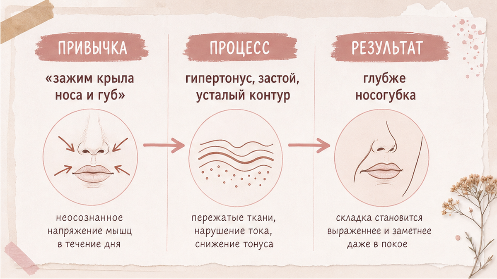
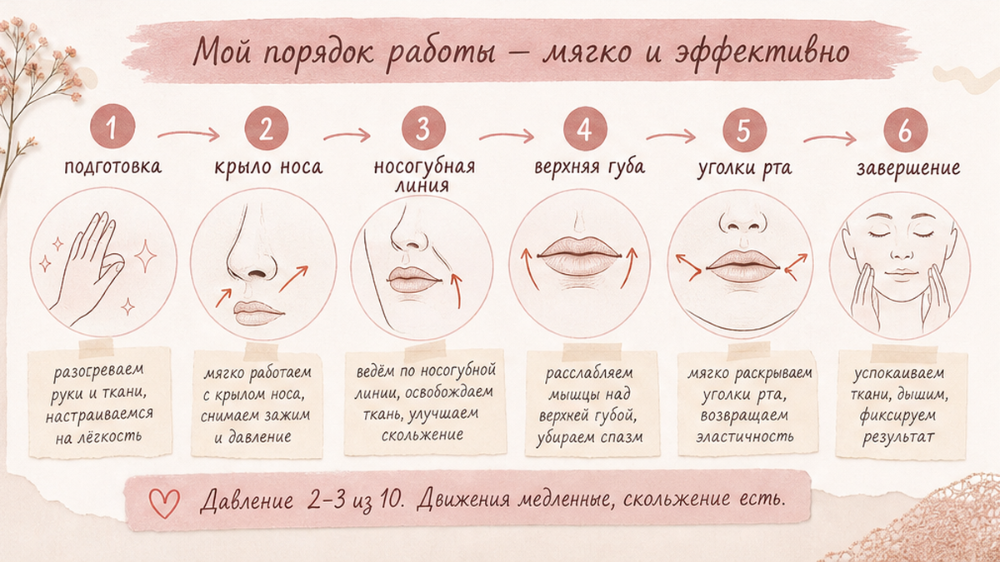
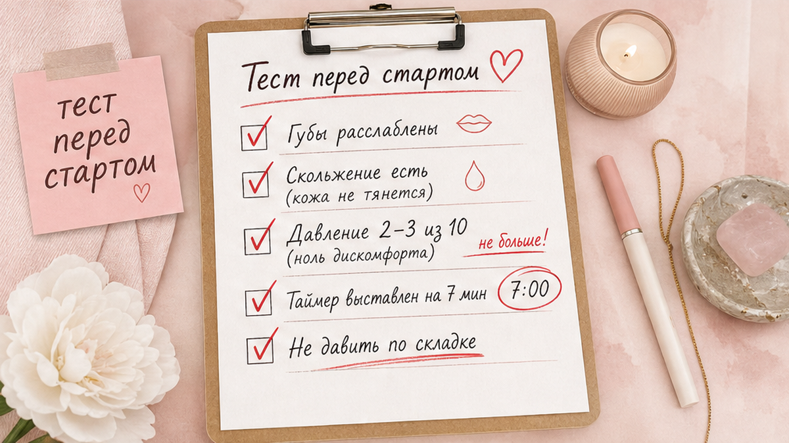

Носогубные складки часто появляются не «внезапно с возрастом», а из-за привычного напряжения вокруг носа и верхней губы. Когда мышцы, опускающие и поднимающие крылья носа, работают в постоянном микрозажиме, ткань тянется вниз, и зона выглядит уставшей даже при хорошем уходе. Хорошая новость: дома можно мягко расслабить эту зону за 5–7 минут, если делать это регулярно и без силового давления.
Я работаю с носогубкой как с зоной привычки, а не как с «дефектом». Наша задача - снять лишний тонус, вернуть мягкое скольжение тканей и перестать подталкивать складку снизу сильными движениями. Ниже - понятная схема: почему это происходит, какие мышцы перегружены, пошаговая проработка и типичные ошибки.
Складка от носа к уголку рта - это не только кожа. Это сочетание тонуса мышц, лимфооттока и привычной мимики. Чаще всего я вижу три триггера у женщин 40+:
Крем сам по себе не решит зажим мышцы. Если ткань постоянно «держится», уход лучше сочетать с мягкой ручной проработкой.

Главные участники - мышцы, опускающие и поднимающие крылья носа, мышцы, поднимающие верхнюю губу, скуловая зона и круговая мышца рта. Когда они перегружены, носогубная линия выглядит более выраженной.
Тест за 30 секунд:
Норма - мягкое скольжение без боли. Если больно - снижайте давление и сокращайте время проработки.

Делайте на чистой коже с каплей масла или лёгкой эмульсии. Давление - 2–3 из 10.
Частота для старта: 4 раза в неделю. Если кожа спокойная - можно до 5–6, но без «ударных» сессий.
Самая частая ошибка - пытаться «разгладить» складку силой. Вместо расслабления ткань получает микростресс, и зона выглядит ещё более уставшей к вечеру.
Как делать правильно: работайте с мышцами вокруг складки, а не «продавливайте» саму линию. Движения медленные, направление - от центра к периферии, без боли.

Чеклист перед стартом: проверьте расслабление губ, используйте средство скольжения, добавьте таймер на 7 минут, избегайте давления по самой складке, не делайте сессию при раздражении. Если больно - остановитесь и снизьте интенсивность.
| Ошибка | Что происходит | Как исправить |
|---|---|---|
| Сильное давление на складку | Микротравма, покраснение, усталый контур | Давление 2–3/10, работа по периферии |
| Работа по сухой коже | Трение и раздражение | Добавить средство скольжения |
| Зажатая верхняя губа | Усиление тонуса в зоне крыла носа | Расслабить губы перед стартом |
| Слишком длинная сессия | Перегрузка тканей | Лимит 5–7 минут |
| Ежедневно без пауз | Реактивная чувствительность | 1–2 дня отдыха в неделю |
Если вы уже используете скребок, сначала проверьте базовую технику в материале про ошибки гуаша. Для общего снятия зажима лица подойдёт короткий протокол расслабления за 5 минут.
Достоверность: рекомендации носят оздоровительно-косметический характер и не заменяют консультацию врача при острых или хронических состояниях.
Упражнения и мягкий массаж помогают снизить выраженность за счёт расслабления мышц и улучшения тонуса тканей. Полностью «стереть» анатомическую складку нереалистично, но визуально зона часто становится мягче и свежее.
При регулярности 4–5 раз в неделю первые изменения по ощущениям обычно заметны через 2–3 недели: меньше зажима, лицо спокойнее в покое. Визуальный эффект зависит от исходного тонуса и образа жизни.
Только очень мягко и после теста на небольшом участке. При выраженном куперозе, розацеа или активном воспалении лучше сначала обсудить метод с дерматологом.
Да. После проработки нанесите базовый уход без агрессивных активов в тот же день. Для скольжения во время массажа используйте отдельное средство, не «тяжёлый» ночной крем.
Чаще всего это слишком сильное давление или работа прямо по линии складки. Снизьте интенсивность и сместите фокус на крыло носа, верхнюю губу и скуловую зону.
Локальный preview Excalibur BLOG. В WordPress уходит только фрагмент article.html; H1 и тема — из WP.